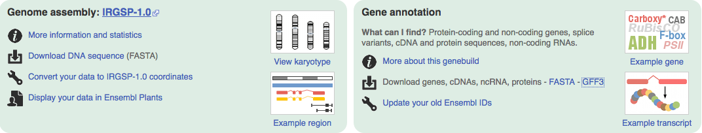

|
Ensembl supplies FASTA formated files for genome sequence and GFF formated files for the annotation
The following provides a simple scheme to produce the correctly formated files for SyMAP.
It has been tested on these genomes.
Contents
Download
- Go to Ensembl, which shows all species
for which Ensembl has a genome. For plants and fungi,
see EnsemblPlant
and EnsemblFungi.
- Select your species.
- Select Download DNA sequence (FASTA). This takes you to a FTP site.
It is recommended that you download the [prefix].dna_sm.toplevel.fa.gz, as it
is the soft masked chromosome sequences.
- Select the GFF3 from the
Download genes, cDNAs, ncRNA, proteins - FASTA - GFF3 line. This takes
you to an FTP site. Download the [prefix].gff3.gz file.

- Go to the symap_5/data/seq directory.
- Make a subdirectory for your species and move the FASTA and GFF files
into the directory.
- Type the following at the command line to copy the ConvertEnsembl script to the pseudo directory:
cp ../../scripts/ConvertEnsembl.class .
chmod 755 *.class
- Execute
java ConvertEnsembl <species>
ConvertEnsembl optional flags:
| Flag | Description | Details | Default
| | -s | Scaffolds | Any sequence not labeled a "chromosome" will be written as a scaffold. See Scaffolds | Chromosomes only
| | -m | Mt and Pt | Include Mt and Pt entries | Do not include
| | -v | Verbose | Print out header lines of skipped sequences | No print
|
Beware: There are variations in the text associated with ">" header lines. The rules
used by this script are as follows:
- If the ">" is followed by a number, X, Y, or roman numeral,
then it is a chromosome.
- If the ">" is followed by "Mt" or "Pt", it is a special case chromosome.
- All other ">" entries are considered scaffolds.
It is a real good idea to execute the following on your fasta file:
zgrep ">" [species_name].dna_sm.toplevel.fa.gz
This shows you the lines and confirms that the above rules will work for your species. If not,
then you will need to edit the script to work (or ask me to at symap@agcol.arizona.edu).
Example
From the symap_5 directory:
cd data/seq
mkdir rice
cd rice
mv ~/Download/Oryza_sativa.IRGSP-1.0.45.chr.gff3.gz .
mv ~/Download/Oryza_sativa.IRGSP-1.0.dna_rm.toplevel.fa.gz .
cd ..
cp ../../scripts/ConvertEnsembl.class .
java ConvertEnsembl rice
This results in the following contents:
data/seq/rice/
Oryza_sativa.IRGSP-1.0.45.chr.gff3.gz
Oryza_sativa.IRGSP-1.0.dna_rm.toplevel.fa.gz
annotation/
anno.gff
gaps.gff
sequence/
genomic.fna
The output gives useful details of the annotation (e.g. see rice details);
if the details do not appear right, you may need to edit the script for your genomes.
Load files into SyMAP
The above scenario puts the files in the default SyMAP directories.
When you start up SyMAP, you will see your projects listed on the left of the panel
(e.g as shown for demos). Check the projects
you want to load, which will cause them to be shown on the right of the symap window and continue
as described in the System Guide.
By default, the ConvertEnsembl script creates the genomic.fna file with only the chromosomes.
However, you can have it also include the scaffolds by using the "-s" flag, e.g. using Oryza Sativa
java ConvertEnsembl rice -s
This will include all chromosomes (prefix 'C') and scaffolds (prefix 's') in the genomic.fna file.
Beware, there can be many tiny scaffolds. If they all aligned in SyMAP, it causes the display to be very cluttered.
Hence, it is best to just align the largest ones (e.g. the longest 30); merge them if possible, then try
the smaller ones. You should set the following SyMAP project parameters:
- grp_prefix needs to be blank as there is no common prefix now.
- min_size should be set to only load the largest scaffolds. To determine the value to use, run the
lenFasta.pl script,
e.g. from the seq directory and using rice as an example:
cp ../../scripts/lenFasta.pl .
perl lenFasta.pl rice/sequence/genomic.fna
If ConvertEnsembl was run with
Oryza_sativa.IRGSP-1.0.dna_sm.toplevel.fa.gz (downloaded 12-Aug-2022)
using the "-s -m" flags, the resulting genomics.fna would have
12 are chromosomes, 49 are scaffolds and Mt and Pt sequences.
The script outputs all their
sorted lengths followed by the following table:
Read genomic.fa and print sorted lengths
Read 63 sequences
N Length Seqid
1 43270923 >C01
2 36413819 >C03
...
Values for min_len (assuming no duplicate lengths):
#Seqs min_len
10 27531856
20 31094
30 16417
40 10901
50 10210
60 6261
To align the top 30 sequences (12 chromosomes, 18 of the largest scaffolds),
this says to set min_size to 16417.
Editing the script
The ConvertEnsembl.java code is supplied in the scripts directory.
It is very simply written, it does not use external libraries
and only common programming techniques found in all programming languages.
Once you make your changes, execute:
javac ConvertEnsembl.java
You will need to have JDK installed to use the 'javac' command.
What the ConvertEnsembl script does
| Go to top |
The following occurs in the data/seq/<project directory name> where "project directory name"
is the argument supplied to ConvertEnsembl:
- Reads the file ending in '.fa.gz' and writes a new file called sequence/genomic.fna with the following changes:
- If a ">seqid" has an id of a number, X, Y or Roman numeral, it is considered a chromosome and prefixed with
"Chr" and the sequence is written to file.
- If the "-m" flag is set and the ">seqid" has an id of Mt or Pt, is it prefixed with "Chr" and
the sequence is written to file.
- If the "-s" flag is set, all other sequences are written to file with an seqid of "sN" where N
is sequential.
- Any string of N's >=30,000 are written to the annotation/gap.gff file.
- Reads the file ending in 'gff3.gz' and writes the file annotation/anno.gff. The
gff3 format
has 9 columns, where the first is the 'seqid', the third is the 'type' (e.g. feature 'gene'), the
last column is a semicolon-delimited keyword=value 'attribute' list. The file is processed as follows:
- Only lines with the 'type' (3rd column) equal 'gene', 'mRNA' and 'exon' are read.
- Genes with "biotype=protein_coding" are written to file, followed by the first mRNA and
its exons.
- All lines have their seqID replaced with that assigned in step 1. They all have a modified
set of attributes written.
Go to top
|


{kind=link}